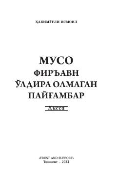

MFMuso payg'ambar va Firavn o'rtasidagi tarixiy kurash va sinovlar haqidagi qissa.
Ushbu qissa Muso payg'ambar va Bani Isroil xalqining qadimgi Misrdagi hayoti, Firavn zulmi hamda ilohiy mo'jizalar haqida hikoya qiladi. Asar tarixiy manbalarga tayanib, sodda va ravoq tilda yozilgan bo'lib, chin musulmon bo'lish mas'uliyatini ochib beradi.